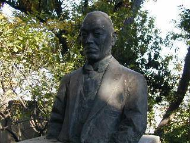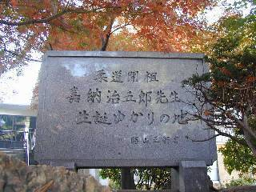
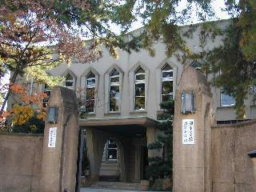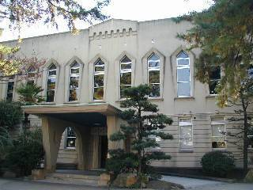
正門を入って正面に見えるのが本館です。灘校が開校した、昭和三年に立てられたという歴史のある本館は、「灘を象徴する建物」でもあり、文化財に指定されています。一階には事務所、保健室、校長室、理事長室、公衆電話などがあります。事務所では各種書類の発行などをしています。また、公衆電話のそばには自動販売機、ペットボトル回収機もあります。二階には本校の校是である、「精力善用」「自他共栄」の額や古く大きな時計のある大講堂があります。文化祭のロックコンサート、高校学芸祭の演劇、入学式や中学の卒業式に使われます。正面の入り口の脇には、数多くのトロフィーやカップが飾ってあります。
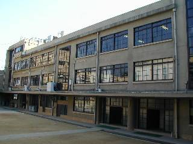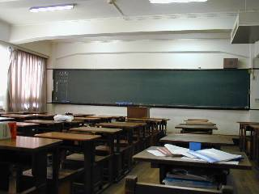
戦前の昭和十四年に、火災で焼失した昔の校舎に代わって建てられたのがこの校舎です。当時としては最高級のコンクリートとありったけの鉄筋を使って建築されたためか、阪神淡路大震災でも倒壊することなく立派に残っています。現在は南側に二号館が出来た為、「旧校舎」と呼ばれています。地下一階には工作室(昔はここが食堂でした)があります。一階には中一の教室、第一化学教室、放送室、生徒会室などがあります。二階には職員室をはじめ、印刷室、会議室といった校舎の中枢部や、英語ワーキングルーム、書道教室、物理教室、第二社会科教室、メディア教室などがあります。三階には中二の教室、生物教室、第一社会科教室などがあります。四階には中三の教室と地学教室があり、四階の北側はテラスになっています。
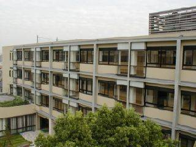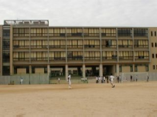
平成十四年に建てられたこの校舎は、「新校舎」と呼ばれています。高校の全教室に加え、一階には音楽室、多目的教室、職員控室があります。二階は高三の教室、三階は高二の教室、四階は高一の教室となっています。新校舎にはエレベーターがついていますが、生徒は使ってはいけません。旧校舎が土足であるのに対して、新校舎は下駄箱があり、スリッパに履き替えなくてはいけません。
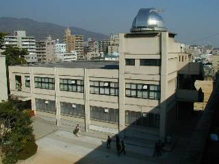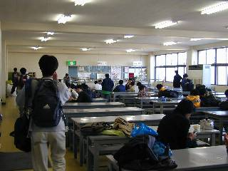
中庭の東側に見える建物が東館です。本校の創立六十周年を記念して建てられた建物です。地下一階には食堂、ブラスバンド部の部室、倉庫などがあります。一階には美術教室、会議室があります。二階には視聴覚室、コンピュータ室があります。視聴覚室はオーディオ機器なども備えられており、ビデオを使った授業の他、各種説明会やホームルームなどに使われます。コンピュータ室には、二〇〇六年度から新しいパソコンが入っています。また、屋上には天体観測室があります。授業では使われず、土曜講座などの特別な時に使われます。
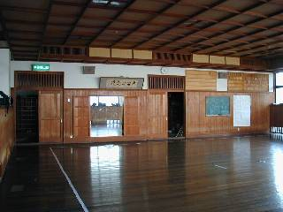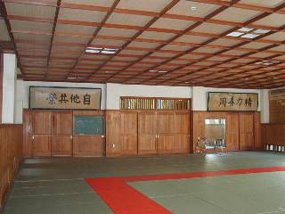
本館の西側にある建物です。本校の創立五十周年を記念して建てられました。一階には柔道場、倉庫、用務員室があります。柔道場には大講堂と同じく嘉納治五郎先生直筆の「精力善用」「自他共栄」の額が飾られ、嘉納治五郎先生の御写真もあります。二階には剣道部の使う剣道場と第二化学教室があります。第二化学教室には様々な実験ができる設備があり、教室はとても大きいです。
旧校舎の南西に位置する建物です。一階は通称文化部長屋と呼ばれています。その名の通り、多くの文化部とワンダーフォーゲル部の部室と、新聞委員会室があり、各部室には、鍵が付います。二階は図書館になっており、かなりの蔵書数があります。また、パソコンでの検索システムも導入されました。三階はＬＬ教室で、英会話の授業で利用されます。また、屋上はアマチュア無線研究部のアンテナが設置されています。
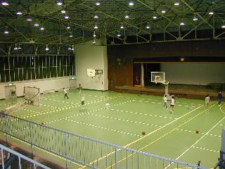
正門から出て右に見える建物です。始業式・終業式や入試合格発表、高校卒業式はここで行われます。震災後に改築が行われたため、現在は土足禁止になっています。体育の授業の他にも、バスケットボール部、バレーボール部、バドミントン部の活動に使われます。地下にはパイプ椅子などの格納庫、自由に使えるトレーニングジムがあります。舞台の上方には放送のブースがあります。授業の時は、体育館シューズを忘れないようにしましょう。二階のスタンドはこの体育館の特色の一つです。
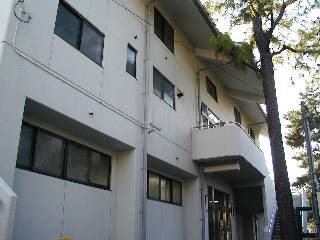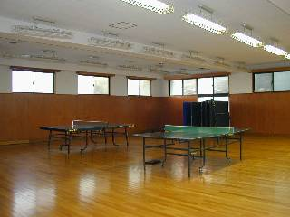
校舎西側の階段を上がった所にある建物です。一階は卓球場、二階と三階は緑の畳の大広間で、洗濯機やシャワーまであり、運動部の夏休みなどの合宿の宿泊施設として使う事ができます。また三階の大広間は、少林寺拳法同好会の練習場ですが、雨の日の体育や柔道の授業、集会などで使われることもしばしばあります。
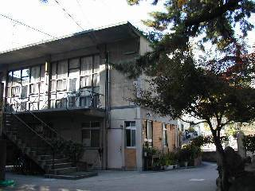
正門から入ってすぐに右に見えるのが旧音楽館で、本校の創立三十周年を記念して建てられました。一階には用務員室があります。以前は二階が音楽室として使われていましたが、現在は育友会室として使われています。
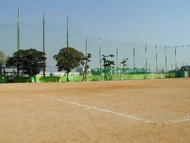
新校舎の南側に広がるのが第一グラウンドです。体育の授業の他にも、野球部、陸上部、ソフトボール同好会の活動に使われます。
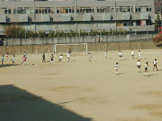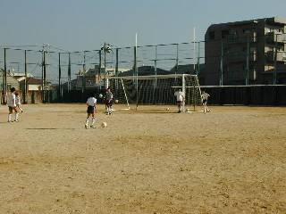
旧校舎一階東端の通路を渡って行くと、第二グラウンドがあります。体育の授業の他にも、サッカー部、ラグビー部の活動に使われます。
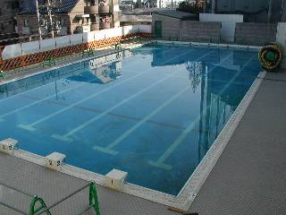
校舎の南東にあります。地震で壊れたため新築されました。かつては少なかった水泳の授業も近年は増加傾向にあります。
本館と旧校舎の間にある空き地で、新中庭と区別して「旧中庭」と呼ばれることもあります。文化祭では、中庭企画があり、大いに盛り上がります。普段は中学一年生専用の遊び場となっています。
旧校舎と新校舎の間にあるスペースです。「新中庭」とも呼ばれます。ベンチもあって、落ち着いた空間です。これぞ、灘校の癒しの場です。
国道二号線からも見える、本校の一番北にある場所です。フェンスで囲まれ、雨水設備も整えています。硬式テニス部の活動の場として使われます。
第二グラウンドの北の端につくられた、ソフトテニス部活動用のコートです。